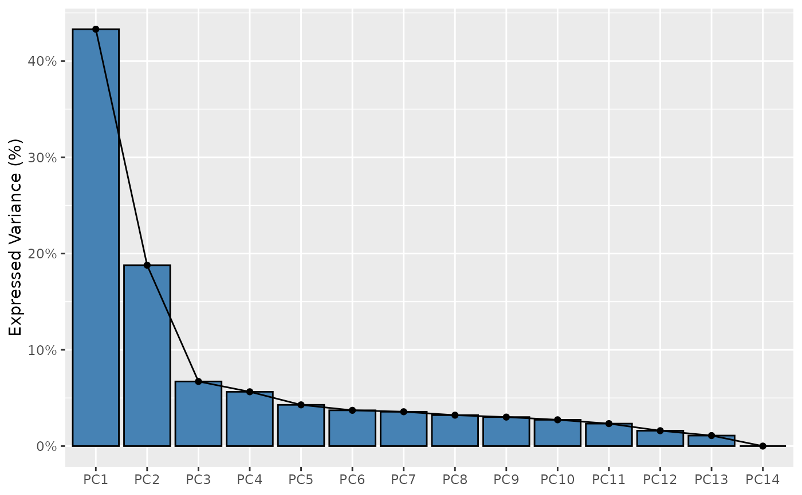
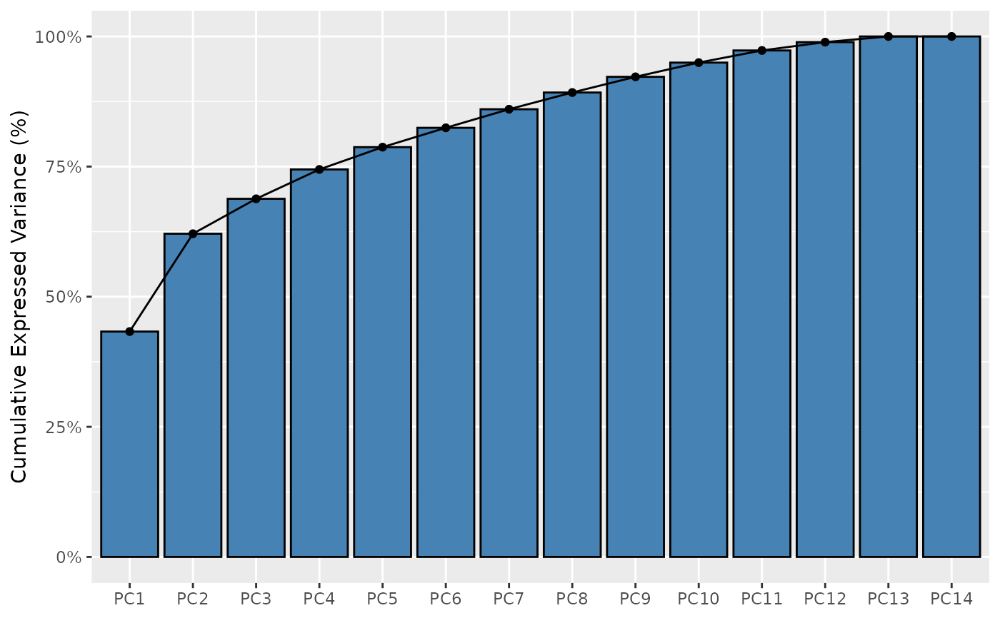

This function plot the explained variance by the Principal Component analysis.
Arguments
- screenR_Object
The ScreenR object obtained using the
create_screenr_object- cumulative
A boolean value which indicates whether or not to plot the cumulative variance. The default value is FALSE.
- color
The color to fill the barplot the default value is steelblue
Examples
object <- get0("object", envir = asNamespace("ScreenR"))
plot_explained_variance(object)

# For the cumulative plot
plot_explained_variance(object, cumulative = TRUE)
